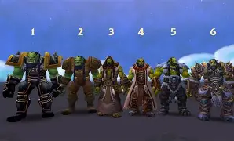

About Thrall |
|
|
Navigation Home About Abilities Allies Contact |
Who is Thrall?Thrall, son of Durotan, was born to the Frostwolf clan. Raised as a gladiator slave, he later escaped and became the Warchief who led the Horde to a new age of honor and freedom. He is a shaman, a warrior, and a symbol of strength and wisdom among his people. Through his connection with the elements, Thrall represents balance, leadership, and the spirit of the Horde. |